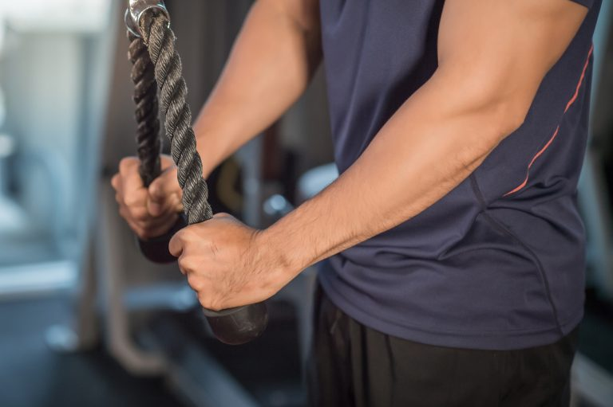

Ajuste a corda no ponto mais alto da polia; Em pé, fique de frente para o equipamento; Incline o corpo para frente em 30 graus e mantenha-o levemente afastado da corda; Mantenha os pés paralelos em látero-lateral ou com uma perna semiflexionada para frente e a outra estendida para trás, mais próxima do equipamento; Os joelhos podem estar semiflexionados; Segure a corda com as duas mãos e os polegares para cima; Lembre-se de manter a cabeça alinhada com a coluna; Posicione os cotovelos nas laterais do corpo e os antebraços paralelos ao chão; Mantenha o abdômen contraído e puxe a corda para baixo em direção à cintura até realizar a extensão dos cotovelos; Ao descer, torça levemente a corda para dentro; Durante o movimento, não altere a posição inicial dos braços e dos ombros; Repita devagar e de acordo com a orientação do profissional supervisor.